【Vue前端框架】Vue3.0全套教程
Vue3快速上手
1.Vue3简介
- 2020年9月18日，Vue.js发布3.0版本，代号:One Piece(海贼王)
- 耗时2年多、2600+次提交、30+个RFC（请求修改意见稿）、600+次PR、99位贡献者
- github上的tags（各个开源版本）地址:https://github.com/vuejs/vue-next/releases/tag/v3.0.0
2.Vue3带来了什么

一、创建Vue3.0工程
1.使用 vue-cli 创建
官方文档：https://cli.vuejs.org/zh/guide/creating-a-project.html#vue-create
|
|
2.使用 vite 创建
官方文档：https://v3.cn.vuejs.org/guide/installation.html#vite vite官网：https://vitejs.cn
-
什么是vite? —— 新一代前端构建工具（作用对比webpack）。
-
优势如下：
- 开发环境中，无需打包操作，可快速的冷启动。
- 轻量快速的热重载(HMR)
- 真正的按需编译，不再等待整个应用编译完成。
-
传统构建 与 vite构建对比图（这两张图来自于vite官网位置）

npm run serve这种的webpack传统工作模式：先是从一个entry，先看路由，再看模块，再进行打包，最后告知8080服务器启动好了。【主要等待时间在Bundle打包的位置】vite构建工作模式：先告知8080服务器启动准备完成，根据你发起的请求，找到对应的
entry并且解析该模块对应的路由和组件信息展示。1 2 3 4 5 6 7 8## 创建工程 npm init vite-app <project-name> ##进入工程目录 cd <project-name> ##安装依赖 npm insta1l ## 运行 npm run dev我们将两种构建模式放一起同时运行，很明显vite方式的要比传统方式快很多。
期间，传统方式等待的这段时间，就是在打包。
注意传统运行命令是npm run serve，vite运行命令式npm run dev。现在vite模式还没有大规模应用，所以我们此文档后面的演示还是使用基于传统模式的运行方式。


3.分析工程结构
分析工程结构，需要：使用Vue3搭建好后最原始的初始化工程
关闭框架自动的校验提示，同样使用Vue2中根目录下的vue.config.js文件。拷贝放入根目录即可。
入口文件main.js
首先分析入口文件，文件路径为工程项目包/src/main.js
|
|
我们对这一句代码createApp(App).mount('#app')，进行拆解分析：
|
|
对比vue2中写法，可以发现结构其实是相似的：
|
|
在Vue3的项目入口文件中使用Vue2中的写法是不可以的。我们可以清晰的看见报错信息：
翻译过来为：不存在的对象，不能进行实例化。
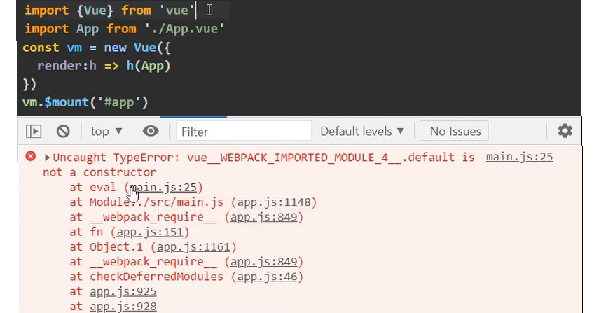我们打印Vue实例对象，我们发现并没有成功引入进来。
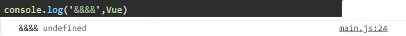所以使用new实例化对象的Vue2写法在Vue3项目中并不可行。
领头组件App.vue
|
|
4.安装开发者工具
Vue2篇幅中，安装在浏览器里的Vue开发者工具是不支持Vue3的。
由此，我们需要安装Vue3专用的开发者工具。
同样，也有两种安装方式：
-
**在线安装：**直接在chrome网上应用商店，搜索
vue，选择图标带脚标的，进行添加安装 -
**离线安装：**Vue开发者工具安装包，拖入拓展程序页面，点击添加，添加后启用。
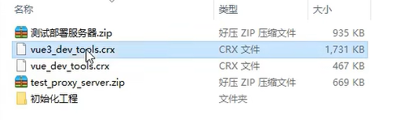 -
如果扩展程序同时添加了Vue2以及Vue3的开发者工具，则需要禁用一个，启用一个。


二、常用 Composition API
Composition API 我们也称组合式API
官方文档: https://v3.cn.vuejs.org/guide/composition-api-introduction.html
1.setup配置项
-
理解：Vue3.0中一个新的配置项，值为一个函数。
1 2 3 4 5 6setup(){ //数据 //方法 //计算属性，监视属性 //生命周期等钩子函数 } -
组件中所用到的：数据、方法等等，均要配置在setup中。
-
setup函数的两种返回值:
1.若返回一个对象，则对象中的属性、方法,在模板中均可以直接使用。
2.若返回一个渲染函数：则可以自定义渲染内容。
-
简单示例：
1 2 3 4 5 6 7 8 9 10 11 12 13 14 15 16 17 18 19 20 21 22 23 24 25 26 27 28 29 30 31 32<template> <h1>Hello Vue3</h1> <!--直接使用setup的返回中暴露的数据和方法--> <h2>姓名：{{name}}</h2> <h2>年龄：{{age}}</h2> <button @click="sayHello">说你好</button> </template> <!--返回一个对象--> <script> export default { name:'App', //此处简单示例只用于测试setup工作，暂不考虑处理响应式 setup(){ //数据 let name = '张三' //不用const说明，以后这些数据有可能发生变化 let age = 18 //方法 function sayHello(){ alert(`我叫${name},我${age}岁了，你好！`) //使用``模版字符串 } //setup返回一个对象，将所有数据和方法暴露出去 return { name, //当key-value形式，写为 name:name时，可以触发简写形式name age, sayHello } } } </script>1 2 3 4 5 6 7 8 9 10 11 12 13 14 15 16 17 18 19 20 21 22 23 24 25 26 27 28 29 30 31 32 33 34<template> <!--不论此模版处写什么，都不进行编译，只读取返回的渲染函数中的内容--> <h1>Hello Vue3</h1> </template> <!--返回一个渲染函数--> <script> //手动引用h函数 import {h} from 'vue' export default { name:'App', setup(){ //数据 let name = '张三' let age = 18 //方法 function sayHello(){ alert(`我叫${name},我${age}岁了，你好！`) } //setup返回一个渲染函数【这种写法不常用，但可做了解】 //在Vue2中，有个render配置项 //只要写render，Vue就帮你传入一个h，并调用，这个h就是渲染函数 //Vue3中，需要手动引入这个h函数，才能调用 //调用方式和Vue2中一样，传入两个参数:h('想要放入页面的元素','该元素对应的文字') //例如：h('h1','你好') //将h函数的调用返回值暴露返回给setup的return。return h('h1','你好') //即整体写做 return ()=>{return h('h1','你好')} //简写为 return ()=> h('h1','你好') return ()=> h('h1','你好') } } </script> -
Vue3是可以向下兼容Vue2写法的，他们可以同时存在和使用，例如：
1 2 3 4 5 6 7 8 9 10 11 12 13 14 15 16 17 18 19 20 21 22 23 24 25 26 27 28 29<template> <!--Vue3所配置的数据及方法--> <h2>姓名：{{name}}</h2> <button @click="sayHello">说你好</button> <!--Vue2所配置的数据及方法--> <h2>姓名：{{age}}</h2> <button @click="sayAge">说你好</button> </template> <!--返回一个对象--> <script> export default { name:'App', //-----------Vue2语法------------ data(){ return {sex:'男'} }, methods：{ sayAge(){ alert(`22222222`) } }, //-----------Vue3语法------------ setup(){ let name = '张三' function sayHello(){ alert(`11111111`) } return { name,sayHello } } } </script> -
注意点:
-
尽量不要与Vue2.x配置混用
-
Vue2.x配置(data、methos、computed..)中可以访问到setup中的属性、方法。
1 2 3 4 5 6 7 8 9 10 11 12 13 14 15 16 17 18 19 20 21 22<!--Vue2中访问Vue3的setup配置中的数据、方法：均能访问成功--> <script> export default { name:'App', data(){ return {sex:'男'} }, methods：{ test(){ console.log(this.sex) //男 console.log(this.name) //张三 console.log(this.sayHello) //function(..) } }, //-----------Vue3语法------------ setup(){ let name = '张三' function sayHello(){ alert(`11111111`) } return { name,sayHello } } } </script> -
但在setup中不能访问到Vue2.x配置(data、methos、computed…)。
1 2 3 4 5 6 7 8 9 10 11 12 13 14 15 16 17 18 19 20 21 22 23<!--Vue3的setup配置中访问Vue2的数据、方法：均不能访问成功--> <script> export default { name:'App', data(){ return {sex:'男'} }, methods：{ sayAge(){ alert(`22222222`) } }, setup(){ let name = '张三' function sayHello(){ alert(`11111111`) } function test(){ console.log(this.sex) //undefined console.log(this.sayAge) //undefined console.log(name) //张三 console.log(sayHello) //function(..) } return { name,sayHello,test } } } </script> -
如果有重名，setup优先。
1 2 3 4 5 6 7 8 9 10 11 12 13 14 15 16 17 18<template> <h2>{{a}}</h2><!--编译a的值，显示为：200--> </template> <script> export default { name:'App', //-----------Vue2语法------------ data(){ return {a:100} }, //-----------Vue3语法------------ setup(){ let a = 200 return { a } } } </script>
-
-
setup不能是一个async函数（不可写做
async setup(){}）。凡是
async修饰的函数，返回值不再是return的对象，而是promise包裹了一层的对象，会导致Vue模板看不到return对象中的属性。在写function为同异步调用的时候特别注意！！这里不能使用！！会导致模版编译不可用！！
-
2.ref函数
- 作用：定义一个响应式的数据
- 接收的数据可以是：基本类型、也可以是对象类型。
- 基本类型的数据：响应式依然是靠 0bject.defineProperty()的 get 与 set 完成的。
- 对象类型的数据：响应式内部“求助”了Vue3.0中的一个新函数-reactive函数【后面阐述】
Vue2中ref是一个标签属性，写做<input ref="qwq' ...>，用于标识组件或者标签。
Vue3中ref也可以作为标签属性，但他还有一个用法，就是作为ref函数：
看一个现象：
正常声明数据变量，并在方法中修改，变量被修改成功，但页面并不渲染。
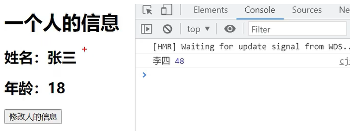
|
|
ref函数-基本类型数据申明
我们用ref函数包裹申明，并且打印申明的数据：
|
|
根据打印结果，很明显的，所有的数据都申明成了一个RefImpl对象。
数据内容都是对RefImpl的实例化。
我们拆分RefImpl单词，分别为reference引用， implement实现。所以对其申明的对象（{}中的内容），我们称之为：引用实现对象。
全称：引用实现的实例对象。
也简称：引用对象。
对于基本数据类型，如果在Vue3中想要实现响应式，则需要将数据丢给ref函数进行处理，形成引用对象。
在Vue3中，基本数据类型通过ref实现响应式，和Vue2中一样，也是通过0bject.defineProperty()实现getter、setter的方式。
且getter、setter其不在实例对象本体RefImpl上，而在原型对象__proto__上。找不到默认往原型上找，可以成功找到。使用数据的时候，可以通过.value的方式进行访问，修改时，也可以通过setter进行页面的重新渲染，且保证了实例对象的属性精简。
上述例子，修改数据的完整写法：
|
|
只有在setup访问中，遵循ES6语法时，访问数据才使用.value的形式。
在模版解析的时候：不能写成name.value。
|
|
在Vue3中，解析模版时，当其发现引用数据为RefImpl的实例对象，则会自动帮我们访问数据对象的.value属性。
如果再手动加.value，就会识别成name.value.value导致也能渲染失败
ref函数-对象类型数据申明
注意申明结构：
|
|
打印person.value结果

这里能看到，对象类型的数据实现响应式，不再同Vue2一样。而是使用的Proxy对象。【后面会详细阐述】
访问每个属性则使用：person.value.type
修改对象类型数据的完整写法：
|
|
3.reactive函数
- 作用：定义一个对象类型的响应式数据
与ref基本和对象类型的都可以申明不同，reactive只能申明对象类型的。用reactive申明基本数据类型let number = reactive(666)，控制台报错：

申明对象类型的，则控制台打印：
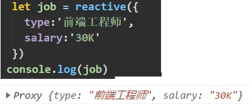-
语法：
const 代理对象 = reactive(源对象)接收一个对象(或数组)，返回一个代理对象(proxy的实例对象，简称proxy对象)
1 2 3 4 5 6 7 8 9//申明对象 let job = reactive({ d:111, a:{ b:{ c: 666 } } })- reactive定义的响应式数据是“深层次的”。
1 2//修改对象 job.a.b.c = 9991 2//申明数组 let hobby = reactive(['111','222','333'])1 2//修改数组 hobby[0] = '000' -
内部基于 ES6 的 Proxy 实现，通过 代理对象 操作 源对象 内部数据进行操作。
4.Vue3.0中的响应式原理
vue2.x的响应式
-
实现原理:
-
对象类型:通过 Object.defineProperty()对对象的的读取、修改进行拦截(数据劫持)。
-
数组类型:通过重写更新数组的一系列方法来实现拦截。(对数组的变更方法进行了包裹)
1 2 3 4Object.defineProperty(data,'count',{ get(){}， set(){} })
-
-
存在问题：
-
新增属性、删除属性，界面不会更新。（原因是：defineProperty只检测查改，检测不到增删。检测查改利用的get和set，没有检测增删的手段和方法）
1 2 3 4 5 6 7 8 9 10 11 12 13 14 15 16 17 18 19 20 21 22 23 24 25 26 27 28 29 30 31 32 33 34 35 36 37 38<template> <div> <!--person身上追加一个性别属性，删除原有的name属性--> <h1 v-show="person.name">姓名：{{person.name}}</h1> <h1>年龄：{{person.age}}</h1> <h1 v-show="person.sex">性别：{{person.sex}}</h1> </div> </template> <script> export default { name: 'App', data(){ return { person:{ name:'张三'， age: 18 } } }, methods:{ addSex(){ this.person.sex = '女' //person中数据改了，但是页面不更新 //解决办法 this.$set(this.person,'sex','女') //或者 import Vue from 'vue' Vue.set(this.person,'sex','女') }, deleteName(){ delete this.person.name //person中数据改了，但是页面不更新 //解决办法 this.$delete(this.person,'name') //或者 import Vue from 'vue' Vue.delete(this.person,'name') } } } </script> -
直接通过下标修改数组,界面不会自动更新。
1 2 3 4 5 6 7 8 9 10 11 12 13 14 15 16 17 18 19 20 21 22 23 24 25 26 27 28<template> <div> <!-- --> <h1>爱好：{{person.hobby}}</h1> </div> </template> <script> export default { name: 'App', data(){ return { person:{ hobby:['学习','吃饭','睡觉'] } } }, methods:{ updateHobby(){ this.person.hobby[0] = '逛街' //person中数据改了，但是页面不更新 //解决办法 this.$set(this.person.hobby,0,'逛街') //或者 this.person.hobby.splice(0,1,'逛街') } } } </script>
-
vue3.0的响应式
vue2.x的响应式模拟
- 新建一个
.html文件，我们在其中模拟vue2.x实现响应式原理的关键代码
|
|
测试一下响应式的效果

vue3.0的响应式模拟
-
想研究Vue3中的响应式，需要认识window上的
window.Proxy这个函数。他是window身上的一个内置的构造函数（不用下载安装，不用引入，直接就可以通过window使用）
-
这个
Proxy我们在之前配置脚手架的代理的时候也用过，当时用作解决ajax跨域的问题。其实，不管在哪里，他都是代理的意思。 -
他的作用，就是使用p去映射对person的操作。和defineProperty弄出来一个p去匹配get、set；一操作p，就使person发生变化，并且能检测到，是一个道理。
下面是他的使用语法：
- 同样是新建一个
.html文件，我们在其中模拟vue3.0实现响应式原理的关键代码
|
|
测试一下响应式的效果
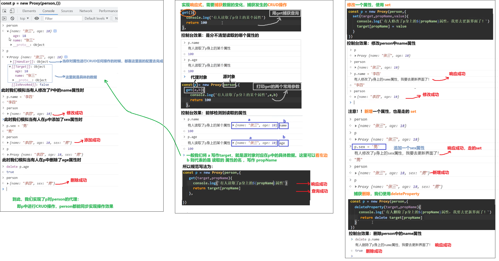vue3.0的响应式真实原理
|
|
-
实现原理:
-
通过Proxy(代理)：拦截对象中任意属性的变化，包括:属性值的读写、属性的添加、属性的删除等。
-
通过Reflect(反射)：对被代理对象的属性进行操作。
-
MDN文档中描述的Proxy与Reflect：
-
|
|
- 读取一个对象
obj身上的属性：
|
|
控制台效果：
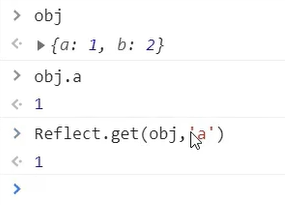
- 修改一个对象
obj身上的属性：
|
|
控制台效果：
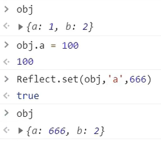- 删除一个对象
obj身上的属性：
|
|
控制台效果：
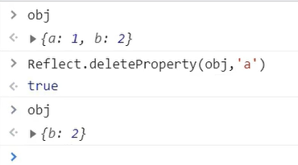
对象Object身上常用的API在Reflect上基本也有，所以Object.defineProperty()对应的Reflect.defineProperty()也是有的。
与Object.defineProperty()不同的是，Reflect.defineProperty()代码编译运行更加健壮，即使存在重复代码，也就能够继续往下执行。而Object却要使用try..catch抛出错误，才能使后方代码继续执行。
所以在Vue3中采用的是Reflect.defineProperty()。
5.reactive对比ref
- 从定义数据角度对比：
- ref用来定义：基本类型数据。
- reactive用来定义：对象(或数组)类型数据
- 备注：ref也可以用来定义对象(或数组)类型数据，它内部会自动通过
reactive转为代理对象。
- 从原理角度对比：
- ref通过
Object.defineProperty()的get与set来实现响应式**(数据劫持)**。 - reactive通过使用Proxy来实现响应式(数据劫持),并通过
Reflect操作源对象内部的数据。
- ref通过
- 从使用角度对比：
- ref定义的数据：操作数据需要
.value，读取数据时模板中直接读取不需要.value。 - reactive定义的数据：操作数据与读取数据：均不需要
.value。
- ref定义的数据：操作数据需要
6.setup的两个注意点
- setup执行的时机
- 在beforeCreate之前执行一次，this是undefined。
- setup的参数
- props：值为对象，包含：组件外部传递过来，且组件内部声明接收了的属性。
- context：上下文对象
- attrs：值为对象，包含：组件外部传递过来，但没有在props配置中声明的属性，相当于
this.$attrs - slots: 收到的插槽内容，相当于
this.$slots - emit: 分发自定义事件的函数，相当于
this.$emit。
- attrs：值为对象，包含：组件外部传递过来，但没有在props配置中声明的属性，相当于
- props接受传参
|
|
- $attrs存储传参
|
|
- 这里注意一个现象：
- 同样的，$slots中也能够存储插槽的虚拟节点信息。如：
|
|
- setup在beforeCreate之前执行，且setup内的this是undefined。
|
|
控制台效果：
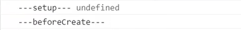- setup中的props参数接受传参
|
|
控制台效果：
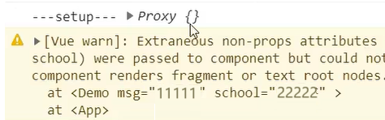
说明Vue3中不能只申明不接收就在setup中使用！
|
|
- setup中的context参数
|
|
控制台效果：
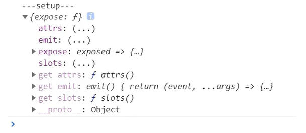这个里面配置项的效果，与Vue2中对应的配置项，的效果一致。
注意！emits要用的时候，必须都先申明：
|
|
注意：Vue3中有API兼容的问题，推荐使用插槽的时候使用v-slot:名字的方式
|
|
7.计算属性与监视
1.computed函数
- 与Vue2.x中computed配置功能一致
- 写法
|
|
2.watch函数
-
与Vue2.x中watch配置功能一致
-
两个小"坑"：
- 监视reactive定义的响应式数据时：oldValue无法正确获取、强制开启了深度监视(deep配置失效)。
- 监视reactive定义的响应式数据中某个属性时：deep配置有效。
1 2 3 4 5 6 7 8 9 10 11 12 13 14 15 16 17 18 19 20 21 22 23 24 25 26 27 28 29 30 31 32 33//情况一:监视ref定义的响应式数据 watch(sum,(newValue,oldValue)=>{ console.log('sum变化了',newValue,oldValue) },{immediate:true}) //情况二:监视多个ref定义的响应式数据 watch([sum,msg],(newValue,oldValue)=>{ console.log('sum或msg变化了',newValue,oldValue) }) /*情况三:监视reactive定义的响应式数据 若watch监视的是reactive定义的响应式数据，则无法正确获得oldvalue!! 若watch监视的是reactive定义的响应式数据，则强制开启了深度监视 */ watch(person,(newValue,oldValue)=>{ console.log('person变化了',newValue,oldValue) },{immediate:true,deep:false})//此处的deep配置不再奏效 //情况四:监视reactive定义的响应式数据中的某个属性 watch(()=>person.job,(newValue,oldValue)=>{ console.log('person的job变化了',newValue,oldValue) },{immediate:true,deep:true}) //情况五:监视reactive所定义的一个响应式数据中的某些属性 watch([()=>person.name,()=>person.age],(newValue,oldValue)=>{ console.log('person的name或age变化了',newValue,oldValue) }) //特殊情况 watch(()=>person.job,(newValue,oldValue)=>{ console.log('person的job变化了',newValue,oldValue) },{deep:true})//此处由于监视的是reactive素定义的对象中的某个属性，所以deep配置有效
3.watchEffect函数
-
watch的套路是：既要指明监视的属性，也要指明监视的回调。
-
watchEfect的套路是：不用指明监视哪个属性，监视的回调中用到哪个属性，那就监视哪个属性。
-
watchEffect有点像computed：
-
但computed注重的计算出来的值(回调函数的返回值)，所以必须要写返回值
-
而watchEffect更注重的是过程(回调函数的函数体)，所以不用写返回值。
1 2 3 4 5 6//watchEffect所指定的回调中用到的数据只要发生变化，则直接重新执行回调。 watchEffect(()=>{ const x1= sum.value const x2=person.age console.log('watchEffect配置的回调执行了') }) -
8.生命周期
待完善
9.自定义hook函数
-
什么是hook?——本质是一个函数，把setup函数中使用的Composition API进行了封装。
-
类似于vue2.x中的mixin。
-
自定义hook的优势：复用代码，让setup中的逻辑更清楚易懂。
10.toRefs
- 作用：创建一个 ref对象，其value值指向另一个对象中的某个属性值。
- 语法：
const name =toRef(person,'name') - 应用：要将响应式对象中的某个属性单独提供给外部使用时。
- 扩展：
toRefs与toRef功能一致，但可以批量创建多个ref 对象，语法：toRefs(person)
三、其它 Composition API
1.shallowReactive 与 shallowRef
-
shallowReactive：只处理对象最外层属性的响应式(浅响应式)。
-
shallowRef：只处理基本数据类型的响应式，不进行对象的响应式处理。
-
什么时候使用?
-
如果有一个对象数据，结构比较深，但变化时只是外层属性变化 ===> shallowReactive。
-
如果有一个对象数据，后续功能不会修改该对象中的属性，而是生新的对象来替换 ===> shallowRef。
-
2.readonly 与 shallowReadonly
- readonly：让一个响应式数据变为只读的(深只读)。
- shallowReadonly：让一个响应式数据变为只读的(浅只读)。
- 应用场景：不希望数据被修改时。
3.toRaw 与 markRaw
-
toRaw：
-
作用：将一个由
reactive生成的响应式对象转为普通对象。 -
使用场景：用于读取响应式对象对应的普通对象，对这个普通对象的所有操作，不会引起页面更新。
-
-
markRaw：
-
作用：标记一个对象，使其永远不会再成为响应式对象。
-
应用场景：
- 有些值不应被设置为响应式的，例如复杂的第三方类库等。
- 当渲染具有不可变数据源的大列表时，跳过响应式转换可以提高性能。
-
4.customRef
-
作用：创建一个自定义的 ref，并对其依赖项跟踪和更新触发进行显式控制。
-
实现防抖效果：
1 2 3 4 5 6 7 8 9 10 11 12 13 14 15 16 17 18 19 20 21 22 23 24 25 26 27 28 29 30 31 32 33 34 35 36 37 38<template> <input type="text" v-model="keyword"> <h3>{{keyword}}</h3> </template> <script> import {ref,customRef} from 'vue' export default{ name:'Demo', setup(){\ //let keyword = ref('hello') //使用Vue准备好的内置ref //自定义一个myRef function myRef(value,delay){ let timer //通过customRef去实现自定义 return customRef((track,trigger)=>{ return{ get(){ track()//告诉Vue这个value值是需要被“追踪”的 return value }, set(newValue){ clearTimeout(timer) timer = setTimeout(()=>{ value = newValue trigger()//告诉Vue去更新界面 },delay) } } }) } // let keyWord =ref('hello') //使用Vue提供的ref let keyWord = myRef('hello',500)//使用程序员自定义的ref return {keyWord} } </script>
5.provide 与 inject
-
作用：实现祖孙组件间通信
-
套路：父组件有一个
provide选项来提供数据，子组件有一个inject选项来开始使用这些数据 -
具体写法：
-
祖组件中:
1 2 3 4 5 6setup(){ ... let car =reactive({name:'奔驰',price:'40万'}) provide('car',car) ... } -
孙组件中:
1 2 3 4 5 6setup(props,context){ ... const car=inject('car') return {car} ... } -
6.响应式数据的判断
-
isRef：检查一个值是否为一个 ref 对象
-
isReactive：检查一个对象是否是由
reactive创建的响应式代理 -
isReadonly：检査一个对象是否是由
readonly创建的只读代理 -
isProxy：检査一个对象是否是由
reactive或者readonly方法创建的代理
四、Composition API 的优势
1.Options API 存在的问题
使用传统OptionsAPI中，新增或者修改一个需求，就需要分别在data，methods，computed里修改。

2.Composition APl 的优势
我们可以更加优雅的组织我们的代码，函数。让相关功能的代码更加有序的组织在一起。

五、新的组件
1.Fragment
-
在Vue2中：组件必须有一个根标签
-
在Vue3中：组件可以没有根标签，内部会将多个标签包含在一个Fragment虚拟元素中
-
好处：减少标签层级，减小内存占用
2.Teleport
-
什么是Teleport?
——
Teleport是一种能够将我们的组件html结构移动到指定位置的技术。
|
|
3.Suspense
-
等待异步组件时渲染一些额外内容，让应用有更好的用户体验
-
使用步骤：
- 异步引入组件
1 2import {defineAsyncComponent} from 'vue' const Child = defineAsyncComponent(()=>import('./components/Child.vue'))- 使用
Suspense包裹组件，并配置好default与fallback
1 2 3 4 5 6 7 8 9 10 11 12 13<template> <div class="app"> <h3>我是App组件</h3> <Suspense> <template v-slot:default> <Child/> </template> <template v-slot:fallback> <h3>加载中.....</h3> </template> </Suspense> </div> </template>
六、其他
1.全局API的转移
- Vue 2.x有许多全局 API和配置。
- 例如：注册全局组件、注册全局指令等
|
|
- Vue3.0中对这些API做出了调整：
- 将全局的API，即:
Vue.xxx调整到应用实例(app)上
- 将全局的API，即:
2.其他改变
-
data选项应始终被声明为一个函数。
-
过度类名的更改:
-
Vue2.x写法
1 2 3 4 5 6 7 8.enter, .v-leave-to{ opacity:0; } .v-leave, .v-enter-to{ opacity: 1; } -
Vue3.x写法
1 2 3 4 5 6 7 8.v-enter-from, .v-leave-to{ opacity: 0; } .v-leave-from, .v-enter-to{ opacity: 1; }
-
-
移除 keyCode作为 v-on 的修饰符，同时也不再支持
config.keyCodes -
移除
v-on.native修饰符-
父组件中绑定事件
1 2 3 4<my-component v-on:close="handleComponentEvent" v-on:click="handleNativeclickEvent" /> -
子组件中声明自定义事件
1 2 3 4 5<script> export default { emits:['close'] } </script>
-
-
移除过滤器(filter)
过滤器虽然这看起来很方便，但它需要一个自定义语法，打破大括号内表达式是“只是 JavaScript" 的假设，这不仅有学习成本，而且有实现成本！建议用方法调用或计算属性去替换过滤器。